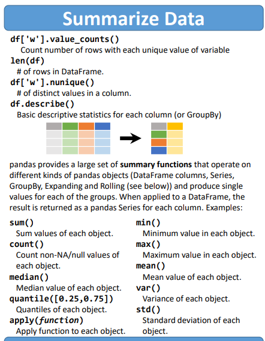

Summarize_Data

import pandas as pd
import seaborn as sns
import numpy as np
df = sns.load_dataset('iris')
df.shape
(150, 5)
df.head(2)
| sepal_length | sepal_width | petal_length | petal_width | species | |
|---|---|---|---|---|---|
| 0 | 5.1 | 3.5 | 1.4 | 0.2 | setosa |
| 1 | 4.9 | 3.0 | 1.4 | 0.2 | setosa |
df['species'].value_counts()
setosa 50
versicolor 50
virginica 50
Name: species, dtype: int64
df["sepal_length"].value_counts()
5.0 10
5.1 9
6.3 9
5.7 8
6.7 8
5.8 7
5.5 7
6.4 7
4.9 6
5.4 6
6.1 6
6.0 6
5.6 6
4.8 5
6.5 5
6.2 4
7.7 4
6.9 4
4.6 4
5.2 4
5.9 3
4.4 3
7.2 3
6.8 3
6.6 2
4.7 2
7.6 1
7.4 1
7.3 1
7.0 1
7.1 1
5.3 1
4.3 1
4.5 1
7.9 1
Name: sepal_length, dtype: int64
len(df)
150
df.shape #150행, 5열
(150, 5)
df['species'].nunique()
3
df.describe(include='all')
| sepal_length | sepal_width | petal_length | petal_width | species | |
|---|---|---|---|---|---|
| count | 150.000000 | 150.000000 | 150.000000 | 150.000000 | 150 |
| unique | NaN | NaN | NaN | NaN | 3 |
| top | NaN | NaN | NaN | NaN | setosa |
| freq | NaN | NaN | NaN | NaN | 50 |
| mean | 5.843333 | 3.057333 | 3.758000 | 1.199333 | NaN |
| std | 0.828066 | 0.435866 | 1.765298 | 0.762238 | NaN |
| min | 4.300000 | 2.000000 | 1.000000 | 0.100000 | NaN |
| 25% | 5.100000 | 2.800000 | 1.600000 | 0.300000 | NaN |
| 50% | 5.800000 | 3.000000 | 4.350000 | 1.300000 | NaN |
| 75% | 6.400000 | 3.300000 | 5.100000 | 1.800000 | NaN |
| max | 7.900000 | 4.400000 | 6.900000 | 2.500000 | NaN |
df['petal_width'].sum()
179.90000000000003
df['petal_width'].count() #행의 수
150
df.median()
<ipython-input-12-6d467abf240d>:1: FutureWarning: Dropping of nuisance columns in DataFrame reductions (with 'numeric_only=None') is deprecated; in a future version this will raise TypeError. Select only valid columns before calling the reduction.
df.median()
sepal_length 5.80
sepal_width 3.00
petal_length 4.35
petal_width 1.30
dtype: float64
df.mean()
<ipython-input-13-c61f0c8f89b5>:1: FutureWarning: Dropping of nuisance columns in DataFrame reductions (with 'numeric_only=None') is deprecated; in a future version this will raise TypeError. Select only valid columns before calling the reduction.
df.mean()
sepal_length 5.843333
sepal_width 3.057333
petal_length 3.758000
petal_width 1.199333
dtype: float64
df['petal_width'].quantile([0.25,0.75])
0.25 0.3
0.75 1.8
Name: petal_width, dtype: float64
df.quantile([0.25,0.75])
| sepal_length | sepal_width | petal_length | petal_width | |
|---|---|---|---|---|
| 0.25 | 5.1 | 2.8 | 1.6 | 0.3 |
| 0.75 | 6.4 | 3.3 | 5.1 | 1.8 |
df.min()
sepal_length 4.3
sepal_width 2.0
petal_length 1.0
petal_width 0.1
species setosa
dtype: object
df.max()
sepal_length 7.9
sepal_width 4.4
petal_length 6.9
petal_width 2.5
species virginica
dtype: object
df.var()
<ipython-input-18-28ded241fd7c>:1: FutureWarning: Dropping of nuisance columns in DataFrame reductions (with 'numeric_only=None') is deprecated; in a future version this will raise TypeError. Select only valid columns before calling the reduction.
df.var()
sepal_length 0.685694
sepal_width 0.189979
petal_length 3.116278
petal_width 0.581006
dtype: float64
df.std()
<ipython-input-19-ce97bb7eaef8>:1: FutureWarning: Dropping of nuisance columns in DataFrame reductions (with 'numeric_only=None') is deprecated; in a future version this will raise TypeError. Select only valid columns before calling the reduction.
df.std()
sepal_length 0.828066
sepal_width 0.435866
petal_length 1.765298
petal_width 0.762238
dtype: float64
apply(함수)
def smp(x):
#뒤에서 3번째 까지의 문자를 가져오는 함수
x = x[-3:]
return x
df['species_3'] = df['species'].apply(lambda x : x[:3])
df['species_3'] = df['species'].apply(smp)
df
| sepal_length | sepal_width | petal_length | petal_width | species | species_3 | |
|---|---|---|---|---|---|---|
| 0 | 5.1 | 3.5 | 1.4 | 0.2 | setosa | osa |
| 1 | 4.9 | 3.0 | 1.4 | 0.2 | setosa | osa |
| 2 | 4.7 | 3.2 | 1.3 | 0.2 | setosa | osa |
| 3 | 4.6 | 3.1 | 1.5 | 0.2 | setosa | osa |
| 4 | 5.0 | 3.6 | 1.4 | 0.2 | setosa | osa |
| ... | ... | ... | ... | ... | ... | ... |
| 145 | 6.7 | 3.0 | 5.2 | 2.3 | virginica | ica |
| 146 | 6.3 | 2.5 | 5.0 | 1.9 | virginica | ica |
| 147 | 6.5 | 3.0 | 5.2 | 2.0 | virginica | ica |
| 148 | 6.2 | 3.4 | 5.4 | 2.3 | virginica | ica |
| 149 | 5.9 | 3.0 | 5.1 | 1.8 | virginica | ica |
150 rows × 6 columns